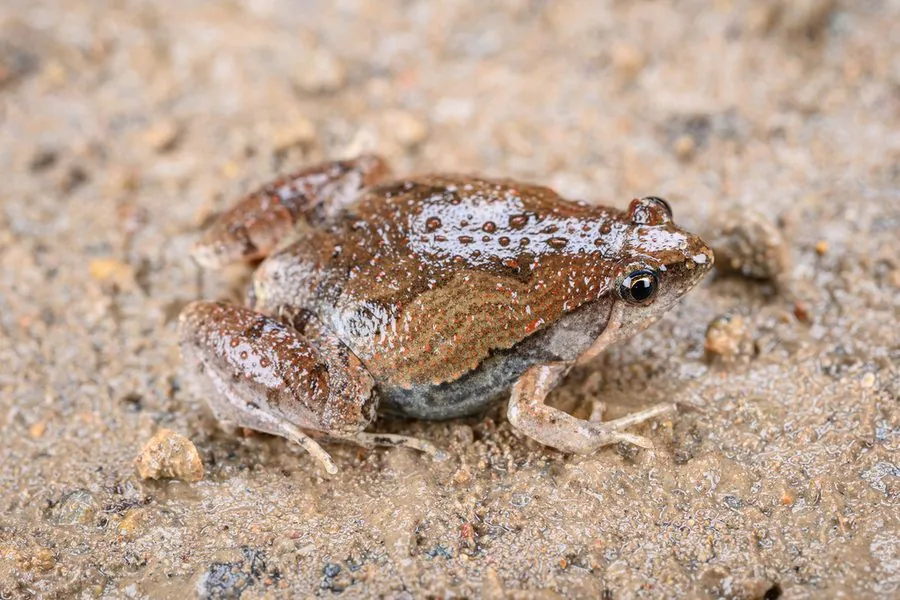

两栖动物 · 动物界
饰纹姬蛙 Microhyla fissipes

中国南方常见的小型蛙类，体长不足 3 厘米，背部有对称的深色花纹，常在草丛和农田中捕食蚂蚁。
- 分类
- 门脊索动物门纲两栖纲目无尾目科姬蛙科属姬蛙属
- 栖息环境
- 稻田、草地、灌丛、林缘与村落附近的潮湿环境
- 地理分布
- 中国南方多省区及东南亚部分地区
- 保护级别
- IUCN 无危（LC）；中国未列入国家重点保护名录
物种志
饰纹姬蛙体长仅 2–3 厘米，是体型很小的蛙类，身体呈短宽的卵圆形，头部小，吻端钝，眼睛较小，背部呈灰褐、黄褐或红褐色，上有对称的深色斑纹和细线，腹面白色；四肢短小，趾间有蹼，善跳跃但更常在地面爬行。
它分布于中国南方以及东南亚地区，栖息于稻田、草地、灌丛、林缘和村落附近，多在雨后和夜间活动，捕食蚂蚁、白蚁、螨虫等小型节肢动物。每年 4–8 月繁殖，雌蛙在浅水中产卵数百粒，卵漂浮在水面，约 1–2 天孵化，蝌蚪在水中生活约 1 个月后变态。它体型小、数量多，是农田和草地食物链中的重要一环，也常被其他蛙类、蛇和鸟类捕食，目前未被列入国家重点保护名录。
形态与习性
- 食性蚂蚁、白蚁、螨虫等小型节肢动物
- 体长2–3 cm
- 寿命约 3–5 年
- 繁殖卵生，每次数百粒，约 1–2 天孵化
- 活动节律夜行性，雨后活动频繁
- 特征背部有对称的深色花纹
趣味知识
- 饰纹姬蛙体长不足 3 厘米，是南方田野里常见的迷你蛙类。
- 它背部的深色斑纹左右对称，是识别姬蛙的重要依据。
- 它主食蚂蚁和白蚁，在农田生态系统中扮演着小型捕食者角色。